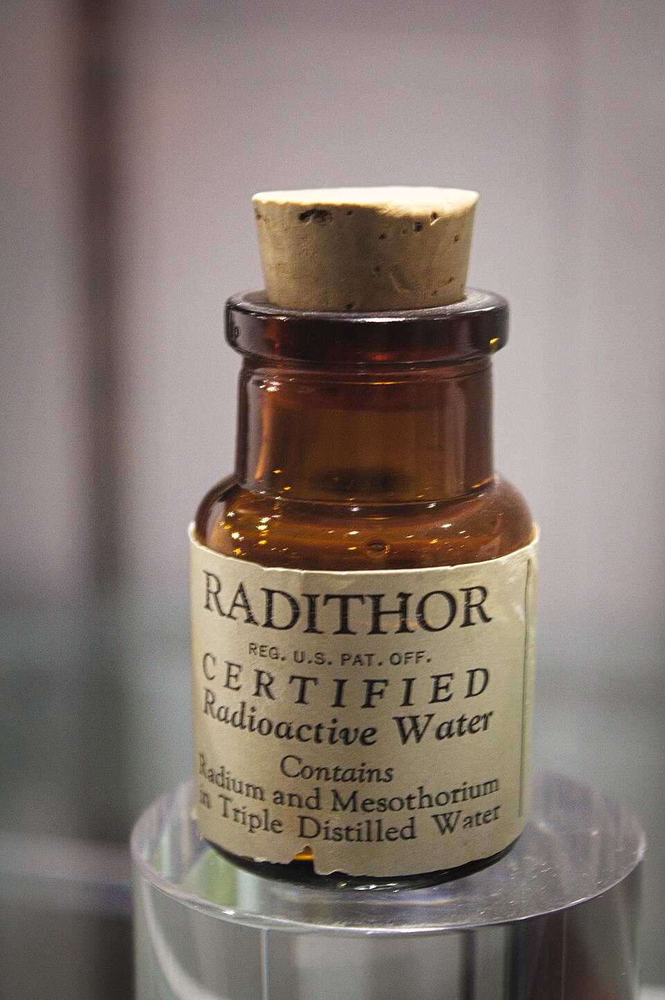

Saint / folklore
Ischia radioactive cure belief

Background
A local conviction that Ischia’s natural radioactivity is health-giving.
Ischia is a volcanic island, and its hot springs have drawn bathers since the Greeks settled there in the eighth century BC. Its spa tradition revived in the sixteenth century and again in the nineteenth. In the early twentieth century, scientists measuring spring waters across Europe found that several Ischian springs carried unusually high levels of radon. Lacco Ameno in particular was promoted as having some of the most radioactive waters in Europe.
At the time this was a selling point. From around 1900 to the 1930s, radioactivity was marketed as a tonic: there were radium spas, radium-laced drinks like Radithor, and even radioactive face creams. The fashion faded after cases like that of Eben Byers, a wealthy American who died in 1932 after drinking Radithor daily. Radon therapy is still practised at a few spas, such as Bad Gastein in Austria.
Ischia · Lacco Ameno · Lacco Ameno (it) · Radioactive quackery · Radithor · Eben Byers · Bad Gastein · Radium and radon in the environment
· Search Google ↗In Naples ’44
The belief that the Naples-facing side of Ischia is beneficially radioactive — slimming, good for the kidneys, bladder and complexion — is why Lola and Susanna go there for the summer ‘to deflate’.
Appears in 1 diary entry.
-
June 9 1944Hospitalized again with malaria, Lewis receives a parade of eccentric visitors from his network of contacts, to the disapproval of hospital staff.
belief that the Naples-facing side of Ischia is radioactive and beneficial, slimming and good for the kidneys, bladder and complexion, aided by rabbits bred in darkness for pale, 'non-fattening' meat
Use ← → to move between pages